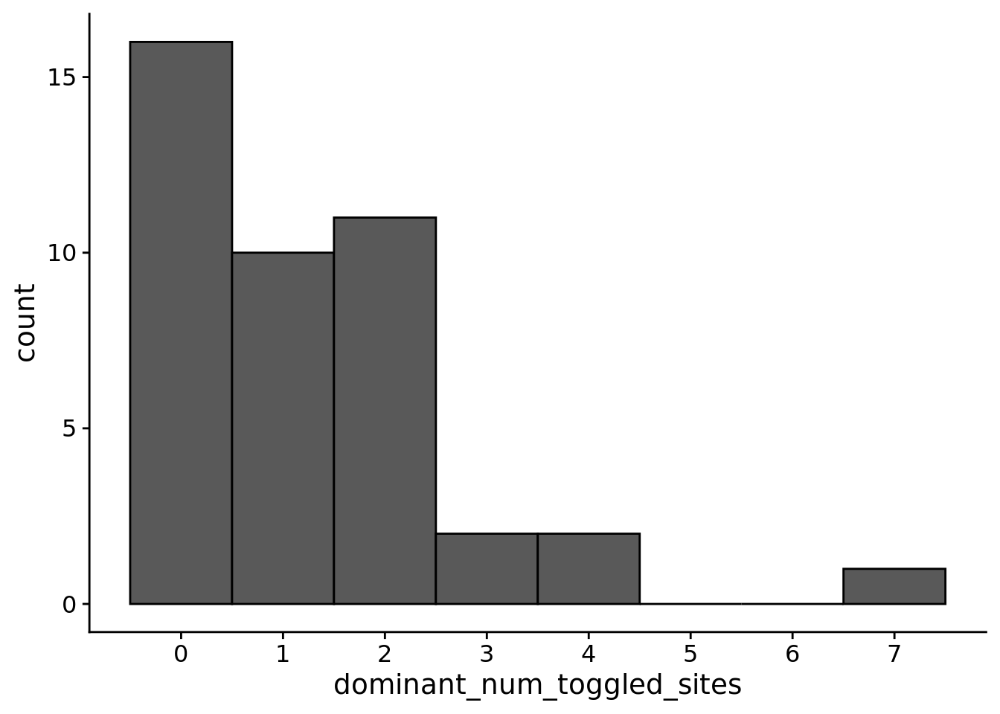
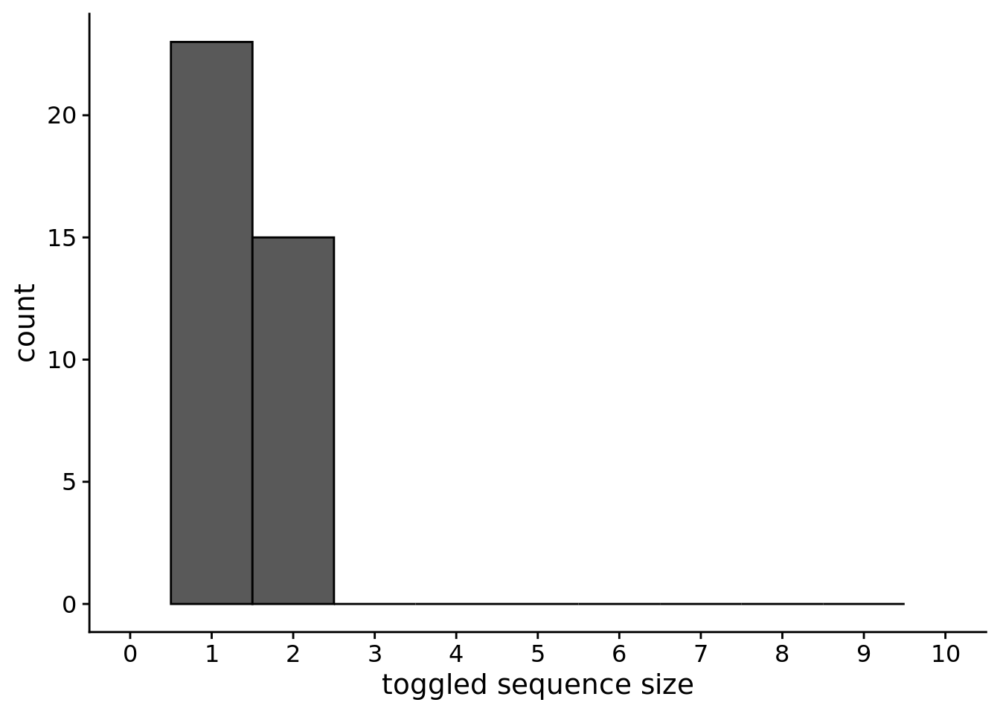

Chapter 9 Regulation in Avida
9.1 Overview
total_updates <- 200000
replicates <- 100
all_traits <- c("not","nand","and","ornot","or","andnot")
traits_set_a <- c("not", "and", "or")
traits_set_b <- c("nand", "ornot", "andnot")
# Relative location of data.
working_directory <- "experiments/2021-02-08-evo-dynamics/analysis/" # << For bookdown
# working_directory <- "./" # << For local analysis9.2 Analysis dependencies
Load all required R libraries.
library(ggplot2)
library(tidyverse)
library(cowplot)
library(RColorBrewer)
library(Hmisc)
library(boot)
source("https://gist.githubusercontent.com/benmarwick/2a1bb0133ff568cbe28d/raw/fb53bd97121f7f9ce947837ef1a4c65a73bffb3f/geom_flat_violin.R")These analyses were conducted/knitted with the following computing environment:
## _
## platform x86_64-pc-linux-gnu
## arch x86_64
## os linux-gnu
## system x86_64, linux-gnu
## status
## major 4
## minor 1.0
## year 2021
## month 05
## day 18
## svn rev 80317
## language R
## version.string R version 4.1.0 (2021-05-18)
## nickname Camp Pontanezen9.3 Setup
trace_summary_data_loc <- paste0(working_directory, "data/trace_summary.csv")
trace_summary_data <- read.csv(trace_summary_data_loc, na.strings="NONE")
trace_summary_data$DISABLE_REACTION_SENSORS <- as.factor(trace_summary_data$DISABLE_REACTION_SENSORS)
trace_summary_data$chg_env <- trace_summary_data$chg_env == "True"
trace_summary_data$sensors <- trace_summary_data$DISABLE_REACTION_SENSORS == "0"
env_label_fun <- function(chg_env) {
if (chg_env) {
return("Fluctuating")
} else {
return("Constant")
}
}
sensors_label_fun <- function(has_sensors) {
if (has_sensors) {
return("Sensors")
} else {
return("No sensors")
}
}
# note that this labeler makes assumptions about how we set up our experiment
condition_label_fun <- function(has_sensors, env_chg) {
if (has_sensors && env_chg) {
return("PLASTIC")
} else if (env_chg) {
return("NON-PLASTIC")
} else {
return("STATIC")
}
}
trace_summary_data$env_label <- mapply(
env_label_fun,
trace_summary_data$chg_env
)
trace_summary_data$sensors_label <- mapply(
sensors_label_fun,
trace_summary_data$sensors
)
trace_summary_data$condition <- mapply(
condition_label_fun,
trace_summary_data$sensors,
trace_summary_data$chg_env
)
####### misc #######
# Configure our default graphing theme
theme_set(theme_cowplot())
dir.create(paste0(working_directory, "plots"), showWarnings=FALSE)9.4 How many instructions do plastic genomes toggle depending on environmental context?
ggplot(trace_summary_data, aes(x=dominant_num_toggled_sites)) +
geom_histogram(
binwidth=1,
color="black"
) +
scale_fill_brewer(
palette="Paired"
) +
scale_color_brewer(
palette="Paired"
) +
scale_x_continuous(
breaks=seq(0, max(trace_summary_data$dominant_num_toggled_sites)+1)
) +
theme(
legend.position="none"
)
## Saving 7 x 5 in image9.5 What is the distrubution of toggled sequence sizes?
chunk_sizes <- data.frame(
size=integer()
)
for (sizes in trace_summary_data$dominant_toggled_chunk_sizes) {
if (sizes == "") { next }
sizes <- unlist(lapply(str_split(sizes, ';'), as.integer))
chunk_sizes <- rbind(chunk_sizes, data.frame(size=c(sizes)))
}
ggplot(chunk_sizes, aes(x=size)) +
geom_histogram(
binwidth=1,
color="black"
) +
scale_fill_brewer(
palette="Paired"
) +
scale_color_brewer(
palette="Paired"
) +
scale_x_continuous(
name="toggled sequence size",
breaks=seq(0, 10),
limits=c(0, 10)
) +
theme(
legend.position="none"
)
## Saving 7 x 5 in image